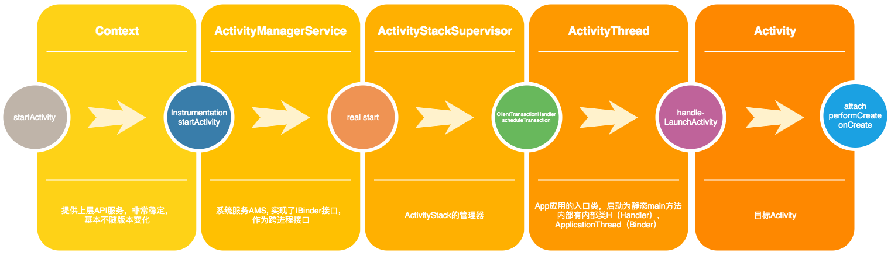

Activity启动流程
页面开发时需要使用Acitivty作为的UI载体，官方对于Acitivty给开发者开放了很多生命周期。本文分析启动Acitivty所经历的流程。
通过源码分析我们要解决以下问题：
- Acitivty是如何创建的？
- Acitivty声明周期的执行，如onCreate被谁调用？
- Activity启动流程涉及哪些环节？
Activity启动
通过指定Intent，调用startActivity可以开启一个新的Activity，并且在Activity的onCreate执行时进行初始化等业务逻辑。
时序图
通过分析源码，我们提取核心的调用流程，其中深红色箭头代表发生了跨进程调用。
核心环节分析
由于Android的源码一直在迭代，Framework的内部细节会有些变化，但是主体流程变化不大。
比如ActivityManagerNative这个类在API 28，27，26的源码中已经废弃，源码也注释了相应的替代接口。
类似废弃的还有：
- ActivityManagerProxy删除
- ActivityManagerNative废弃
- ApplicationThreadProxy删除
我们把整个流程精简一下，核心步骤如下图：

ContextWrapper, ContextImpl
作为顶层入口，提供了Activity启动的调用API，如startActivity， startActivityForResult;
ActivityManagerService
系统服务，经常被称作AMS，App调用AMS是通过Binder机制实现的，AMS是系统服务。在这里提供了startActivity服务，我们通过Context的api启动Activity最终是将消息发送给了AMS，执行对应的跨进程操作。
ActivityStartController、ActivityStart
由于执行Activity启动是一个相对复杂的动作，包括对Intent的flag的判定，Activity从属Task的判断，已经当前Task内是否有Activity，置顶等等，这些都依赖了大量的参数，参数列表就很长。在我们分析的API 28版本中，系统会用建造者模式，创建对应的ActivityStart来处理启动参数。 比如：
mActivityStartController.obtainStarter(intent, "startActivityAsUser")
.setCaller(caller)
.setCallingPackage(callingPackage)
.setResolvedType(resolvedType)
.setResultTo(resultTo)
.setResultWho(resultWho)
.setRequestCode(requestCode)
.setStartFlags(startFlags)
.setProfilerInfo(profilerInfo)
.setActivityOptions(bOptions)
.setMayWait(userId)
.execute();
ActivityStack、ActivityStackSupervisor
ActivityStart中经过层层判定转发，最后会将控制权转移到Stack这边。
- ActivityStack管理了Activity的状态，他持有AMS引用，也持有ActivityStackSupervisor引用
- ActivityStackSupervisor是ActivityStack的管理类，他也持有AMS，并且持有多份ActivityStack对象
- ActivityStackSupervisor最后会通过AMS发起Transaction动作，Transaction的具体实现有很多，执行后触发Callback，其中一个就是代表启动Activity的LaunchItem
ActivityThread、ClientTransactionHandler
这两个是子类与父类关系，ActivityThread实现了父类的一些API，比如handleLaunchActivity，类似API还有：
- handleResumeActivity
- handlePauseActivity
- handleStopActivity
- handleDestroyActivity
- handleActivityConfigurationChanged
- handleNewIntent
- handleRelaunchActivity
- sendMessage
- updatePendingConfiguration
基本上覆盖到了Activity的生命周期。
onActivityResult流程
Activity启动发起后，通过Binder最终交由system进程中的AMS来完成。
- 启动Acitivty的动作，经历了ActivityManagerService，简称AMS，ActivityStackSupervisor，通过跨进程Binder调用，将创建Activity的消息给到了目标App的进程。
- 目标App进程唤起后，最终由ActivityThread.H处理一个Acitivty Create消息，然后从消息携带的ActivityClientRecord中构造出Acitivty信息，用反射调用无参构造函数；最后执行Acitivty实例的onCreate方法。
- 在执行Activity.onCreate前有一段对Application创建检查的逻辑，保证一个App进程必须有一个Application实例，除此之外还有创建ContextImpl和attach的相关逻辑。
在启动Activity的API执行后，还有一段对返回值的校验动作，

在ActivityThread.sendActivityResult执行后，通过H(Handler)内执行了transaction消息，调用了
ActivityResultItem的execute方法；该对象持有ActivityThread引用，执行Result分发逻辑，进一步调用Activity的
dispatchActivityResult方法，该方法会执行我们平时复写的onActivityResult。
调用关系如下：
- ActivityThread.sendActivityResult
- ClientTransactionHandler.scheduleTransaction
- ActivityThread.H => EXECUTE_TRANSACTION
- android.app.servertransaction.TransactionExecutor.execute
- ClientTransactionItem.execute
- 注意在这个场景下，ClientTransactionItem的实现类就是ActivityResultItem，所以执行的是ActivityResultItem.execute
- ActivityThread.handleSendResult
- ActivityThread.deliverResults
- Activity.dispatchActivityResult
- Activity.onActivityResult
小结
通过分析Activity启动流程，可以发现他的嵌套转发虽然很多，很深，但是大的就是套路模式。现在我们解答一下开篇的疑问：
- Acitivty是如何创建的？
Activity的创建，首先经过了AMS转发，实现了不同进程间的切换，最终由Acitivty的目标进程的ActivityThread进行处理，具体过程为，通过Transaction执行了handleLaunchActivity方法，然后利用Classloader，执行Instrumentation.newActivty实例化了Activity对象
- Acitivty声明周期的执行，如onCreate被谁调用？
在Activity实例化后，会执行Activity的attach，setTheme，performCreate，接着内部执行到了onCreate方法
- Activity启动流程涉及哪些环节？
- 发起App，调用Context的接口，将请求通过Binder机制发送到系统服务AMS处理；
- AMS接受到请求后根据目标App的存活情况，新页面的参数配置，进行一系列的准备；
- AMS最终将创建Activity的任务转发给目标App进程，由目标进程的ActivityThread信息Activity的构造和生命周期的执行；
参考
- Android SDK 28
- Android开发艺术探索-Activity工作过程
- startActivity启动过程分析